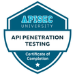

Cybersecurity
Api Penetration Testing - Certification Details
 Microsoft Certified: Security Operations Analyst Associate - Certification Details
Microsoft Certified: Security Operations Analyst Associate - Certification Details
Microsoft Certified: Cybersecurity Architect Expert - Certification Details
Firewall
Palo Alto Network Certified Network Security Administrator - Certification Details
Networking
Juniper Networks Certified Associate (JNCIA-Junos) - Certification Details
Juniper Networks Certified Specialist (JNCIS-ENT) - Certification Details
Juniper Networks Certified Associate, Design (JNCIA-Design) - Certification Details
Infrastructure
 Azure Fundamentals - Certification Details
Azure Fundamentals - Certification Details